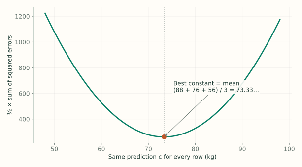
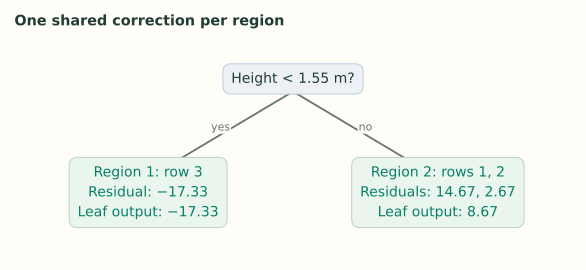

2. Regression: The Derivation
Notes on StatQuest with Josh Starmer · Gradient Boost Part 2 · 26:46 video. Explanations and redrawn figures follow the lecture’s worked example, followed by Friedman's robust leaf-refitting extensions (MAE and Huber loss).
Lecture 1 showed what boosting does. This lecture derives the same steps from squared-error loss: start at a mean, calculate residuals, fit a tree, average within its leaves, and update predictions—then shows how changing the outer loss changes both the pseudo-residuals and the optimal leaf calculation.
1. Three rows and one loss
Video 0:56 ↗| Row | Height (m) | Color | Gender | Weight $y_i$ |
|---|---|---|---|---|
| 1 | 1.6 | Blue | Male | 88 |
| 2 | 1.6 | Green | Female | 76 |
| 3 | 1.5 | Blue | Female | 56 |
$x_i$ means the input features of row $i$; $y_i$ is its measured weight. $F(x_i)$ is the current prediction. The loss of one row is
The factor $1/2$ makes derivatives simpler. It halves every squared-error total, so it does not change which prediction has the smallest loss.
2. Why the first prediction is the mean
Video 6:30 ↗Before building a tree, choose one constant $c$ for every row. The notation $\arg\min_c$ means “find the value of $c$ that makes this total smallest.”
Differentiate with respect to $c$, and set the result to zero:

3. Why the negative gradient becomes a residual
Video 10:01 ↗At round $m$, $F_{m-1}$ is the model containing all trees built so far. Unlike Step 2 (where one shared constant $c$ affected every row in $\sum_{k=1}^n L$), here we want a separate target $r_{im}$ for each individual row $i$. Differentiating the total loss with respect to row $i$’s own prediction $F(x_i)$ makes every other row’s term ($k \ne i$) vanish, leaving no summation:
A positive derivative means increasing the prediction increases loss. Reverse its sign to get the direction we want the next tree to learn:
For this loss, the pseudo-residual is exactly the ordinary residual. “Pseudo-residual” is the general name because other losses produce different negative gradients.
| Row | Actual weight | Current prediction | First residual |
|---|---|---|---|
| 1 | 88 | 73.33… | +14.666… |
| 2 | 76 | 73.33… | +2.666… |
| 3 | 56 | 73.33… | −17.33… |
4. Fit the tree and name its regions
Video 12:47 ↗Train a regression tree with the original features as inputs and these residuals as targets. The lecture’s stump uses height < 1.55 m. Row 3 goes left; rows 1 and 2 go right.

$R_{jm}$ means leaf region $j$ in tree $m$. $\gamma_{jm}$ is the single correction that leaf will output. For the first tree there are two regions: $R_{1,1}$ and $R_{2,1}$.
5. Why each leaf outputs the average residual
Video 14:50 ↗Keep the previous predictions fixed. For one region $R$, choose a shared addition $\gamma$ that minimizes the loss of its rows:
The expression $y_i-F_{m-1}(x_i)$ is the residual $r_i$. So we are fitting one constant to the residuals inside this leaf:
The left leaf has just one residual, so it outputs $-17.33\ldots$. The right leaf outputs $(14.666\ldots+2.666\ldots)/2=8.666\ldots$. Averaging is therefore the squared-loss solution, not an extra arbitrary rule.
6. Update predictions and repeat
Video 20:38 ↗With learning rate $\nu=0.1$, add one tenth of the leaf output to each row’s previous prediction:
| Rows | Previous prediction | Leaf correction | Updated prediction |
|---|---|---|---|
| 1 and 2 | 73.33… | +8.666… | 74.2 |
| 3 | 73.33… | −17.33… | 71.6 |
The next residuals are $88-74.2=13.8$, $76-74.2=1.8$, and $56-71.6=-15.6$. Fit the next tree to these new targets.
$J_m$ is the number of leaves. The indicator is 1 only for the leaf reached by $x$, so exactly one leaf contributes per tree. The sum is a way to write the tree’s prediction; a row does not enter multiple leaves.
7. Beyond Squared Error: Terminal-Leaf Refitting Under MAE and Huber Loss
Under squared error, a subtle coincidence hides Friedman's Step 5: the ordinary CART leaf prediction (the mean of the pseudo-residuals $r_{im}$) happens to equal the exact loss-minimizing leaf shift $\gamma_{jm}$. As soon as you switch to a robust regression loss, growing the tree on pseudo-residuals and computing each leaf's output $\gamma_{jm}$ become two distinct operations.
Write $e_i = y_i - F_{m-1}(x_i)$ for row $i$'s true residual entering round $m$, and compare three regression losses on a single terminal leaf $R_{jm}$ whose five rows have residuals $e = [-2,\,-1,\,+1,\,+2,\,+15]$ (four quiet observations plus one extreme $+15$ outlier):
- Squared Error ($L_2$), $L(y_i, F) = \frac{1}{2}(y_i - F)^2$: Pseudo-residuals are $r_{im} = e_i$, and minimizing $\sum_{R_{jm}} \frac{1}{2}(e_i - \gamma)^2$ gives the leaf mean: $$\gamma_{L_2} = \frac{-2 + (-1) + 1 + 2 + 15}{5} = \mathbf{+3.00}.$$ Notice the outlier damage: $+3.00$ overshoots four out of the five rows in the leaf!
- Mean Absolute Error / Least Absolute Deviations ($L_1$), $L(y_i, F) = |y_i - F|$: Differentiating $|y_i - F|$ gives unit-sign pseudo-residuals $r_{im} = \operatorname{sign}(e_i) = [-1, -1, +1, +1, +1]$. A CART splitter uses those signs to group positive-error rows away from negative-error rows. However, if the leaf naively output the average of its pseudo-residuals, it would output $(-1 - 1 + 1 + 1 + 1)/5 = +0.20$—ignoring residual magnitudes altogether! Instead, Step 5 refits $\gamma_{jm}$ directly on the true $L_1$ objective $\sum_{x_i \in R_{jm}} |e_i - \gamma|$. Setting the subgradient $\sum_{x_i \in R_{jm}} \operatorname{sign}(\gamma - e_i)$ to include $0$ yields the leaf median of true residuals: $$\gamma_{L_1} = \operatorname{median}(-2, -1, 1, 2, 15) = \mathbf{+1.00}.$$ On this leaf, $\gamma_{L_1} = +1.00$ achieves total absolute error $3 + 2 + 0 + 1 + 14 = \mathbf{20.0}$, beating both the $L_2$ mean ($24.0$) and the naive sign-average ($20.8$).
- Huber Loss ($L_\delta$ with threshold $\delta = 3.0$): Pure $L_1$ boosting only sees $\pm 1$ signs during split selection, which can lose efficiency on Gaussian noise. Huber loss acts quadratically for small errors ($|e| \le \delta$) and linearly in the tails ($|e| > \delta$):
$$L_\delta(y_i, F) = \begin{cases}\frac{1}{2}(y_i - F)^2 & \text{if } |y_i - F| \le \delta,\\ \delta\bigl(|y_i - F| - \frac{1}{2}\delta\bigr) & \text{if } |y_i - F| > \delta.\end{cases}$$Its pseudo-residuals clip outliers at $\pm\delta$: $r_{im} = [-2, -1, +1, +2, +3]$. For the terminal leaf value, Friedman (2001) derives a fast one-step approximation centered on the leaf residual median $\tilde r = \operatorname{median}(e) = 1.0$:$$\gamma_{\text{Huber}} \approx \tilde r + \frac{1}{|R_{jm}|}\sum_{x_i \in R_{jm}} \operatorname{sign}(e_i - \tilde r)\min\bigl(\delta, |e_i - \tilde r|\bigr) = 1.0 + \frac{-3 + (-2) + 0 + 1 + 3}{5} = \mathbf{+0.80}$$(within $0.05$ of the exact numerical Huber minimizer $\gamma_{\text{Huber}}^* = \mathbf{+0.75}$, where total Huber loss is $44.375$ vs. $52.000$ at the $L_2$ mean!).
| Outer Loss | Pseudo-Residuals $r_{im}$ (Used for Splits) | Naive Mean of $r_{im}$ | Refitted Leaf Value $\gamma_{jm}$ | Outlier Sensitivity |
|---|---|---|---|---|
| Squared Error ($L_2$) | $[-2, -1, +1, +2, +15]$ | $+3.00$ | $+3.00$ (leaf mean of $e_i$) | High — single $+15$ outlier pulls leaf $+2$ units above median. |
| MAE / LAD ($L_1$) | $[-1, -1, +1, +1, +1]$ | $+0.20$ (wrong scale!) | $+1.00$ (leaf median of $e_i$) | Breakdown point $50\%$ — invariant whether outlier is $+15$ or $+15{,}000$. |
| Huber ($\delta = 3.0$) | $[-2, -1, +1, +2, +3]$ | $+0.60$ | $+0.80$ (1-step) / $+0.75$ (exact) | Bounded influence ($\pm\delta$) with smooth $L_2$ precision near $0$. |
Verify Lecture 2 and the L₂ / MAE / Huber leaf refits in Python
import numpy as np
from sklearn.ensemble import GradientBoostingRegressor
# 1. Verify StatQuest Lecture 2 exact numbers (heights 1.6, 1.6, 1.5; weights 88, 76, 56)
X_sq = np.array([[1.6], [1.6], [1.5]])
y_sq = np.array([88.0, 76.0, 56.0])
m_sq = GradientBoostingRegressor(loss="squared_error", learning_rate=0.1, n_estimators=1, max_depth=1).fit(X_sq, y_sq)
print("Lecture 2 updated predictions:", m_sq.predict(X_sq)) # [74.2, 74.2, 71.6]
# 2. Verify terminal-leaf refitting on residuals e = [-2, -1, 1, 2, 15]
e = np.array([-2.0, -1.0, 1.0, 2.0, 15.0])
delta = 3.0
med = np.median(e)
gamma_l2 = e.mean()
gamma_l1 = med
gamma_huber_1step = med + np.mean(np.sign(e - med) * np.minimum(delta, np.abs(e - med)))
def huber_total(g):
u = np.abs(e - g)
return np.sum(np.where(u <= delta, 0.5 * u**2, delta * (u - 0.5 * delta)))
grid = np.linspace(-2.0, 4.0, 60001)
gamma_huber_exact = grid[np.argmin([huber_total(g) for g in grid])]
print(f"L2 mean={gamma_l2:.2f} | L1 median={gamma_l1:.2f} | Huber 1-step={gamma_huber_1step:.2f} | Huber exact={gamma_huber_exact:.2f}")
print(f"Huber loss at exact (0.75): {huber_total(gamma_huber_exact):.3f} vs at L2 mean (3.00): {huber_total(gamma_l2):.3f}")